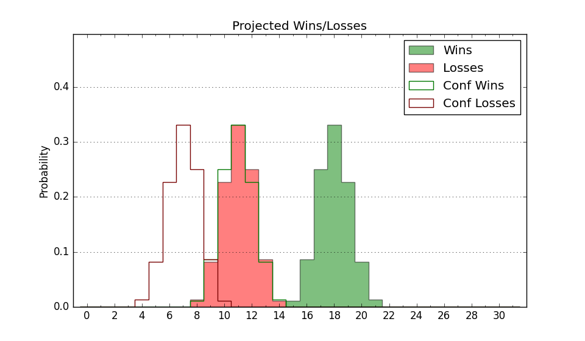

| Home | Game Probabilities | Conferences | Preseason Predictions | Odds Charts | NCAA Tournament |
| City: | Seattle, Washington | |
| Conference: | Western (3rd)
| |
| Record: | 8-4 (Conf) 15-8 (Overall) | |
| Ratings: | Comp.: 2.9 (130th) Net: 2.9 (130th) Off: 100.7 (208th) Def: 97.8 (93rd) SoR: 3.1 (94th) |
| Remaining | ||||||
|---|---|---|---|---|---|---|
| Date | Opponent | Win Prob | Pred. | |||
| 2/11 | Grand Canyon (115) | 58.3% | W 69-67 | |||
| 2/15 | @ California Baptist (187) | 44.6% | L 64-66 | |||
| 2/18 | Utah Valley (78) | 45.4% | L 68-70 | |||
| 2/24 | @ Grand Canyon (115) | 29.1% | L 65-71 | |||
| 3/1 | @ Dixie St. (151) | 38.2% | L 72-75 | |||
| 3/3 | UT Arlington (247) | 83.1% | W 71-60 | |||
| Previous | Game Score | |||||
| Date | Opponent | Win Prob | Result | Off | Def | Net |
| 11/7 | @UC San Diego (278) | 64.8% | W 85-71 | 24.4 | -14.2 | 10.1 |
| 11/13 | Portland St. (246) | 83.0% | W 83-71 | 4.1 | 0.6 | 4.7 |
| 11/19 | @Portland (126) | 32.9% | W 80-68 | 9.2 | 10.9 | 20.1 |
| 11/28 | @Washington (113) | 28.3% | L 66-77 | -2.4 | -3.3 | -5.7 |
| 11/30 | Cal St. Fullerton (128) | 63.7% | W 69-62 | 9.1 | -3.8 | 5.4 |
| 12/10 | @North Dakota (293) | 67.3% | W 80-78 | -1.1 | -4.5 | -5.6 |
| 12/15 | @Oregon St. (201) | 48.8% | L 58-73 | -13.2 | -12.7 | -25.9 |
| 12/18 | Alcorn St. (283) | 86.7% | W 72-58 | -5.0 | 9.0 | 4.0 |
| 12/22 | (N) Utah St. (28) | 15.8% | L 56-84 | -21.5 | -6.5 | -27.9 |
| 12/23 | (N) Iona (83) | 32.4% | L 72-83 | -3.6 | -4.1 | -7.7 |
| 12/25 | (N) George Washington (209) | 65.4% | W 85-67 | 1.2 | 10.4 | 11.6 |
| 12/31 | California Baptist (187) | 73.3% | W 71-65 | 1.6 | -1.3 | 0.2 |
| 1/5 | @UT Rio Grande Valley (259) | 62.3% | W 66-64 | -14.3 | 13.4 | -1.0 |
| 1/7 | @UT Arlington (247) | 59.1% | W 76-61 | 34.1 | -4.4 | 29.7 |
| 1/12 | New Mexico St. (160) | 70.0% | W 69-66 | -6.2 | 4.7 | -1.5 |
| 1/14 | @Utah Valley (78) | 19.6% | W 85-80 | 25.1 | -7.8 | 17.4 |
| 1/19 | Tarleton St. (185) | 72.8% | W 67-47 | -0.9 | 22.8 | 21.9 |
| 1/21 | Southern Utah (101) | 54.2% | W 81-60 | 6.0 | 22.1 | 28.1 |
| 1/26 | @Sam Houston St. (66) | 17.2% | L 40-55 | -21.8 | 14.9 | -6.8 |
| 1/28 | @Stephen F. Austin (122) | 30.9% | L 65-79 | -11.0 | -3.6 | -14.7 |
| 2/1 | Abilene Christian (197) | 74.7% | L 68-83 | -10.1 | -25.4 | -35.5 |
| 2/4 | @New Mexico St. (160) | 40.7% | L 75-82 | -1.1 | -9.8 | -10.9 |
| 2/8 | Dixie St. (151) | 67.7% | W 75-71 | 2.5 | -10.3 | -7.8 |
| Stats & Trends | |||||
|---|---|---|---|---|---|
| Current | Day | Week | Month | Season | |
| Composite | 2.9 | +0.1 | -0.8 | -0.2 | +1.6 |
| Comp Rank | 130 | +3 | -1 | +9 | +13 |
| Net Efficiency | 2.9 | +0.1 | -0.8 | -0.5 | -- |
| Net Rank | 130 | +4 | -1 | +9 | -- |
| Off Efficiency | 100.7 | +0.1 | +0.1 | -1.0 | -- |
| Off Rank | 208 | +2 | -5 | -38 | -- |
| Def Efficiency | 97.8 | +0.0 | -0.9 | +0.4 | -- |
| Def Rank | 93 | +3 | -8 | +27 | -- |
| SoS Rank | 124 | +4 | +5 | +64 | -- |
| Exp. Wins | 18.0 | -0.0 | -0.3 | +0.5 | +1.5 |
| Exp. Conf Wins | 11.0 | -0.0 | -0.3 | +0.5 | +0.5 |
| Conf Champ Prob | 3.0 | +0.1 | -1.3 | -5.4 | -11.6 |

| Advanced Stats | ||
|---|---|---|
| Stat | Value | Rank |
| Off Eff FG % | 0.467 | 311 |
| Off Ast Ratio | 0.131 | 264 |
| Off ORB% | 0.296 | 97 |
| Off TO Rate | 0.135 | 34 |
| Off FT Ratio | 0.288 | 267 |
| Def Eff FG % | 0.487 | 116 |
| Def Ast Ratio | 0.145 | 193 |
| Def ORB% | 0.232 | 57 |
| Def TO Rate | 0.154 | 193 |
| Def FT Ratio | 0.313 | 181 |